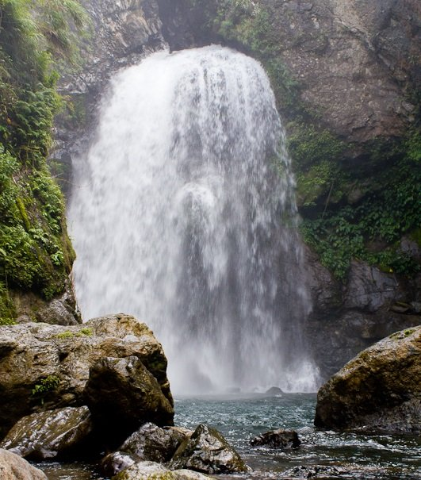

Palang-ah FallsPalang-ah Falls lies adjacent to a ravine in Tulgao, Tinglayan. It is named as such because it resembles the shape of a chair. “Palang-ah” is a local term for chair. Palang-ah Falls measures around 40 feet high and has carved a very deep pool. When the sun strikes, the falls projects a view of a rainbow. The waters here are icy-cold and crystal-clear, enough to soother and harden muscles. Just a few meters from the falls is a hot spring. So here, you can experience a mix of cold and hot bath. |